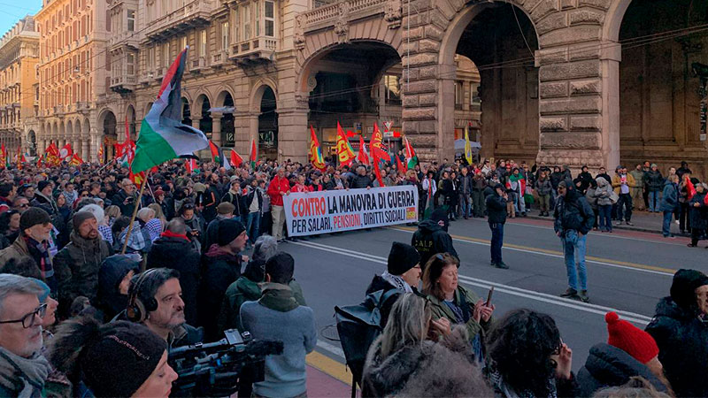

Worldnews
about us
DONATIONS
contact us
sign in
log in
Account 👤
My Account
×
Manage Articles 🛠️
Profile Settings
My Saved News
Log Out
Search
Noticias de Izquierda
Jornada de huelga general en Italia contra Meloni y el rearme militar

Noticias de Derecha
Los primeros aviones f-16 argentinos iniciaron su viaje hacia pais
Noticias de guerra
Guerra de Ucrania, en directo: Rusia responde al rearme militar de la OTAN con un programa a gran escala